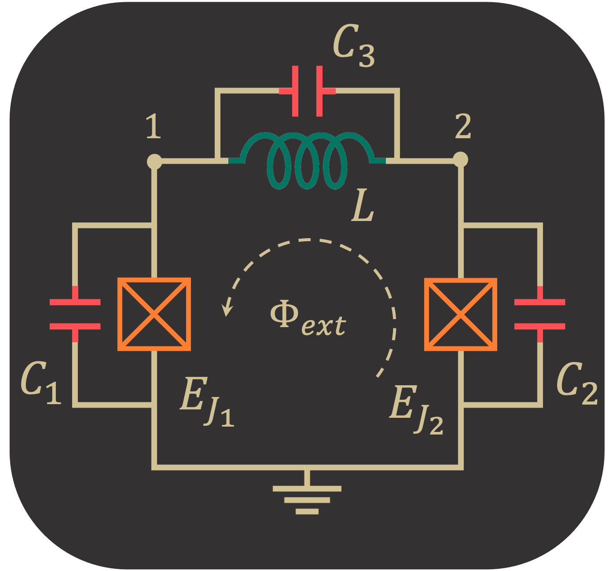

External Flux Distribution
In the SQcircuit original paper, we show that the Hamiltonian of any circuit (without any transformation of coordinates) can be written as the following form
\begin{equation} {{H}} = \frac{1}{2} \hat{{\mathbf{Q}}}^T {\mathbf{C}}^{-1}\hat{{\mathbf{Q}}} + \frac{1}{2} \hat{{\mathbf\Phi}}^T {\mathbf{L}}^{*} \hat{{\mathbf\Phi}} +\sum_{k\in \mathcal{S}_L}\left(\frac{\Phi_0}{2\pi}\frac{\mathbf{b}_k^T\mathbf{\varphi}_{\text{ext}}}{l_k}\right){\mathbf{w}}^T_k{\hat{\mathbf{\Phi}}}-\sum_{k\in \mathcal{S}_J} E_{J_k} \cos \left(\frac{2\pi}{\Phi_0}{\mathbf{w}}^T_k{\hat{\mathbf{\Phi}}}+\mathbf{b}_k^T\mathbf{\varphi}_{\text{ext}}\right)\end{equation}
where distribution of external fluxes for each inductive element is specified by \(n_L\) (number of loops) dimensional vector \(\mathbf{b}_k\). We also showed in the paper that the correct description for external fluxes depends on the capacitors associated to each inductive element (see the paper for the details).
We use the following circuit as an example to demonstrate the SQcircuit functionalities.

Firstly, we build our circuit by assigning three equal capacitors to each inductive elements( Josephson junctions and inductors).
[1]:
import SQcircuit as sq
C = sq.Capacitor(1)
loop1 = sq.Loop(id_str="loop1")
JJ1 = sq.Junction(1, loops=[loop1], cap=C, id_str="JJ1")
JJ2 = sq.Junction(1, loops=[loop1], cap=C, id_str="JJ2")
L = sq.Inductor(1, loops=[loop1], cap=C, id_str="ind")
elements = {(0, 1): [JJ1],
(0, 2): [JJ2],
(1, 2): [L]}
Note that in the construction of circuit elements, we set id_str for the loop and inductive elements, which makes it easier later to identify the assignment of loop distributions. If we do not pick the id_str for the interested elements, SQcircuit assigns auto-generated id_str for elements.
In SQcircuit, we provided flux_dist option in circuit construction that specifies the method for assigning external fluxes to inductive elements. If flux_dist is set to "all", SQcircuit automatically assigns the external fluxes to junctions and inductors based on their capacitors. However, if it is set to "junction" or "inductor", SQcircuit discards the capacitor assignment of inductive elements and assumes that junction capacitors are much smaller than inductor capacitors
for "junction" option and otherwise for "inductor" option.
By using loop_description() method, we can find the loop description for our circuit. Here, we expect the distribution of the flux to be equal among the elements since we set equal capacitors for each element.
[2]:
cr = sq.Circuit(elements, flux_dist='all')
cr.loop_description()
loop1
----------------------------
JJ1, b1: 0.33333
JJ2, b2: 0.33333
ind, b3: 0.33333
For junction assignment (the default option in SQcircuit):
[3]:
cr = sq.Circuit(elements, flux_dist="junctions")
cr.loop_description()
loop1
----------------------------
JJ1, b1: 0.5
JJ2, b2: 0.5
ind, b3: 0.0
and for inductor assignment:
[4]:
cr = sq.Circuit(elements, flux_dist="inductors")
cr.loop_description()
loop1
----------------------------
JJ1, b1: 0.0
JJ2, b2: 0.0
ind, b3: 1.0